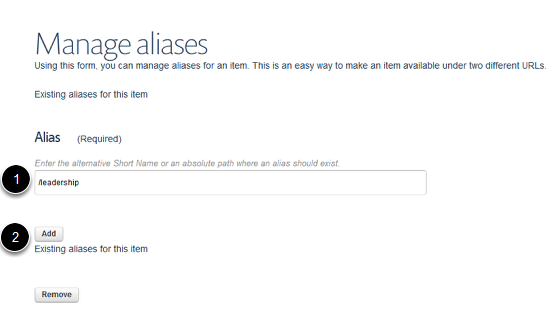
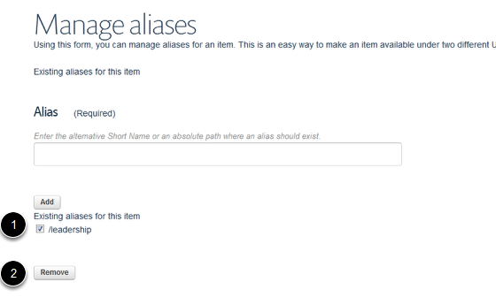

Set up an Alias / Give a Page an Alternate Web Address¶
Setting up an alias enables you to give a page an alternate web address. This can be used, for example, if you wish to have a simpler or shorter web address for publicity material or if you have moved the location of a page and would like set up the old web address as an additional address.
In this example we will give an Events page a shorter web address.
Find your page and click on Aliases¶

Go to the page you would like to give an additional web address to and click on Aliases.
This page currently has a web address of: www.phc.ox.ac.uk/events/international-primary-care-research-leadership-programme In the next step we will give this an alias of: www.phc.ox.ac.uk/leadership
Enter alternative web address¶
- Enter the alternative web address. Don’t include the first part of the web address (e.g. www.phc.ox.ac.uk) - start with the first slash after ox.ac.uk . Don’t have spaces in your web address - use hyphen instead.
- Click on Add.
You will now see the alias listed under the Add button.
Remove an alias¶
To remove an alias: 1. Click in the check box next to alias you would like to delete. 2. Click on the Remove button.